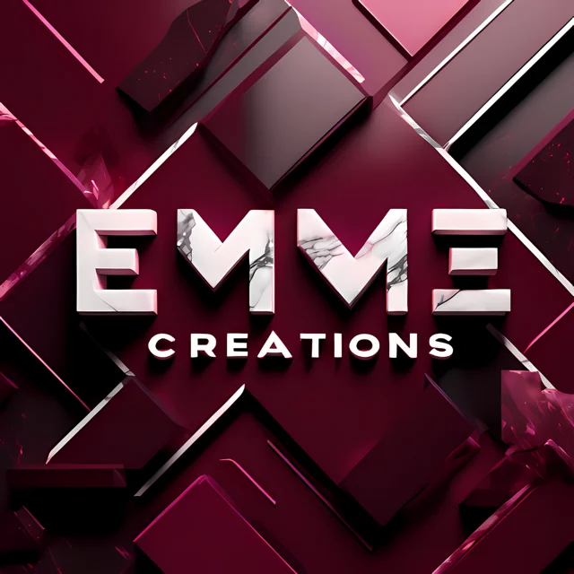
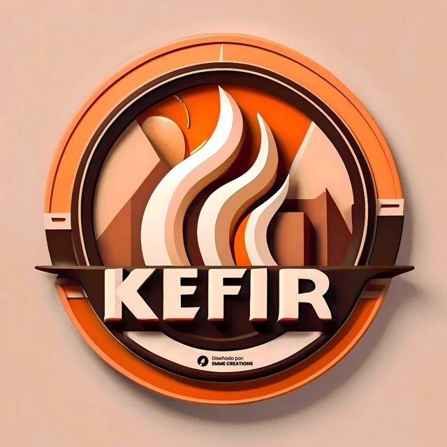

November 2024 — August 2026 · 1 year, 9 months
Technical support
Fintech companySQL, MySQL, Postman and APIs. Excel reports and macros, AI automations, QA and coordination of new projects.
Systems · Data · Automation
SQL Developer.
Data and automation.
I work with SQL in Microsoft SQL Server Management Studio and manage tickets in Jira. I also develop websites and automate tasks with Python, n8n and Make.

My professional background
I’m an advanced Systems Analysis student at ORT. My experience combines data work, software testing and task automation.
View my full experienceNovember 2024 — August 2026 · 1 year, 9 months
SQL, MySQL, Postman and APIs. Excel reports and macros, AI automations, QA and coordination of new projects.
01 / Selected projects
I designed and developed each of these projects independently.

01 / Brand & digital presence
A space for content, social media and web design services.

02 / Academic project
A movie catalog built as a web development exercise at Codo a Codo.

03 / Informational website
Educational content about kefir, organized into a simple reading experience.
02 / Capabilities
SQL queries, record comparisons and reports to identify differences between operations.
SQL · SQL Server / SSMS · MySQL · Excel
In my previous role, I used SQL, MySQL and Excel to review data and prepare reports.
View experienceAPI testing, log analysis and transaction validation to trace a problem across systems.
Postman · REST APIs · JSON · Jira
In my previous role, I tested APIs with Postman and performed QA checks on integrations.
View previous responsibilitiesAutomation workflows and applied AI to reduce repetitive steps and organize information.
n8n · Make · Python · VBA
In my previous role, I prepared Excel reports, macros and automations, and worked with AI automation. My training also includes n8n and Make.
View automation trainingWebsite and backend application development. Functional testing to check that they behave as expected.
JavaScript · Node.js · MongoDB · QA
The projects include links to the published websites, my contributions and the code repositories.
Explore projects03 / Services through MAR Studio
MAR Studio is my digital services project. I design and develop websites, build automations and integrate AI tools according to each project’s needs.
Design and development of pages for phones, tablets and desktops.
Workflows that connect tools, organize data and prepare reports.
AI assistants and workflows for defined tasks within a process.
04 / Continuous learning
Contact
Email me about a job opportunity or to discuss web development and automation services.
Send an email